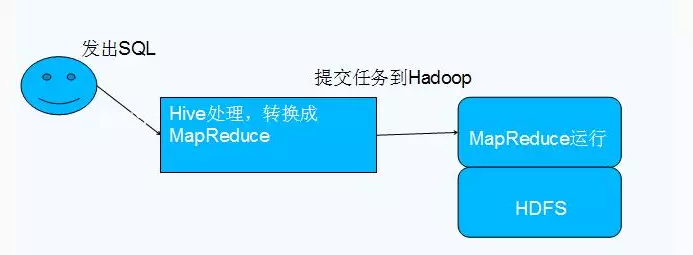

Table of Contents
hive
hive是基于hadoop的数据仓库。
Apache Hive数据仓库软件提供对存储在分布式中的大型数据集的查询和管理，它本身是建立在Apache Hadoop之上，主要提供以下功能：
（1）它提供了一系列的工具，可用来对数据进行提取/转化/加载（ETL）；
（2）是一种可以存储、查询和分析存储在HDFS（或者HBase）中的大规模数据的机制；
（3）查询是通过MapReduce来完成的（并不是所有的查询都需要MapReduce来完成，比如select * from XXX就不需要；
（4）在Hive0.11对类似select a,b from XXX的查询通过配置也可以不通过MapReduce来完成
